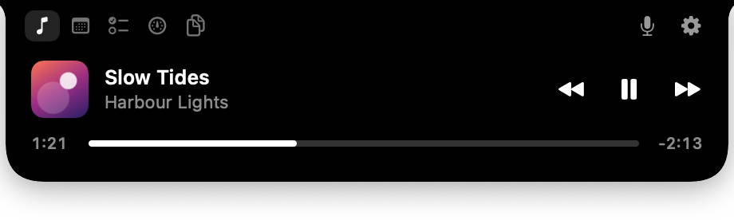
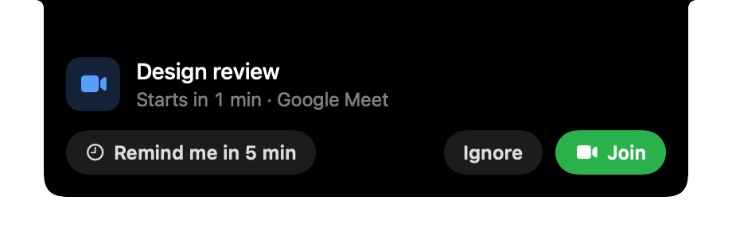
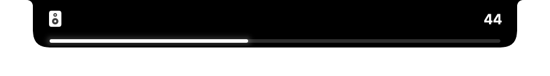
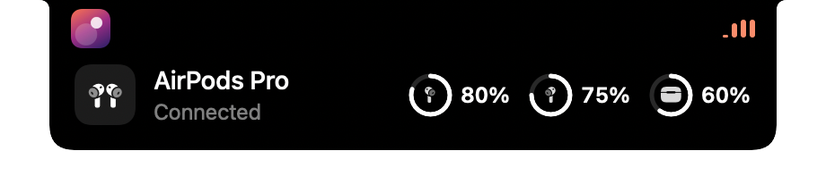

Your notch,
put to work.
Clove turns the notch on your MacBook into a small black island. Move the pointer to it to see what's playing, what's next and how your Mac is doing. Try the one up there.
Free and open source. macOS 26 or later.

Music or Spotify, with artwork and controls. Click the track to jump to the app.
Never late to a call.
Clove reads the video link in your calendar invites (Zoom, Google Meet, Teams, Webex, FaceTime) and makes sure you're there when the call starts.
- Ten minutes beforeThe call's name and a countdown sit beside the notch.
- As it startsA card drops below the notch with three choices.
- Join, Ignore, or Remind me in 5 minJoin opens the call. Ignore lets it go. The third brings the card back in five minutes.

The right thing,
at the right moment.
When something happens, the island grows beside the notch for a moment, then gets out of the way. Every popup is as wide as the open island, so nothing jumps around.




It stays on your Mac.
No account, no analytics, no server of its own. Here is everything Clove reads, and where it goes.
Privacy policy- Calendar
- Read on your Mac to show your next events. Never sent anywhere.
- Music and Spotify
- What's playing, read from the app on your Mac. Spotify artwork comes from Spotify's image servers.
- Clipboard
- What you copy, kept in memory while Clove runs. Only what you pin is saved, on your Mac. Never sent, and passwords are skipped.
- Voice notes
- Transcribed and understood on your Mac. Only the changes you approve go to Linear.
- Linear
- Your own API key, kept in your keychain and sent only to Linear.
- Keys
- If you let Clove handle the volume keys, it sees those keys and no others.
Built in the open.
MIT-licensed Swift with no third-party dependencies. Read it, build it, change it.
SwiftUI and AppKit, one folder per feature.
Tell us what happened and on which Mac.
Ideas for new activities and pages are welcome.
$ git clone https://github.com/sriramkansala/clove $ cd clove $ scripts/build.sh --direct --install BUILD OK -> build/Direct/Clove.app INSTALLED -> /Applications/Clove.app
Questions
Something else? Ask on GitHub.
Is Clove free?
Yes. No in-app purchases, no account and no ads. The source is MIT-licensed.
Which Macs does it work on?
Any Mac on macOS 26 or later. It's made for MacBooks with a notch; on other displays the island sits at the top centre of the menu bar. Voice notes need a Mac with Apple Intelligence.
How do call reminders work?
Clove looks for a Zoom, Meet, Teams, Webex or FaceTime link in each event of the Calendar app. A minute before such a call it asks: Join, Ignore, or Remind me in 5 min. Turn it off in Settings › Live activities › Meeting reminders.
What's the difference between the App Store and the download?
They're the same app. The download can also take over the brightness keys, read live power figures from the battery, and switch Low Power Mode on in one click through a small helper you allow once. The App Store version opens Battery settings for that instead.
What permissions does Clove ask for?
Each one the first time a feature needs it: Calendars for your events, Automation to read and control Music or Spotify, Input Monitoring and Accessibility to handle the volume keys, and the microphone for voice notes. Everything else works without them.
How do I connect Linear?
Create a personal API key in Linear (Settings › Security & access) and paste it into Clove's Settings. Clove checks it with Linear and keeps it in your keychain.
How do I uninstall it?
Quit Clove from its menu bar icon and move it to the Trash. If you used one-click Low Power Mode in the download version, also turn off its helper in System Settings › General › Login Items.